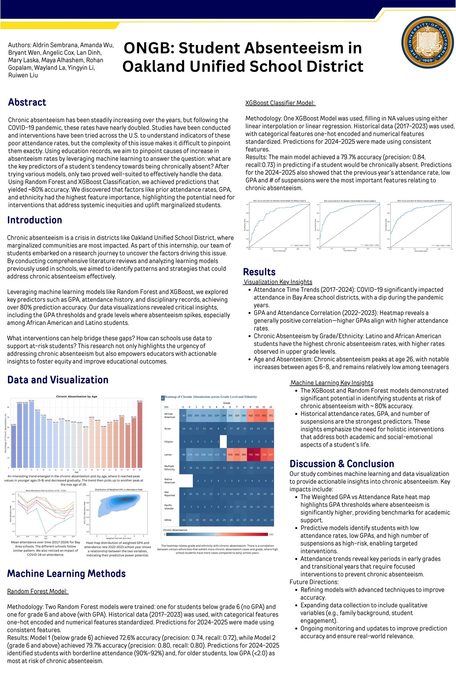
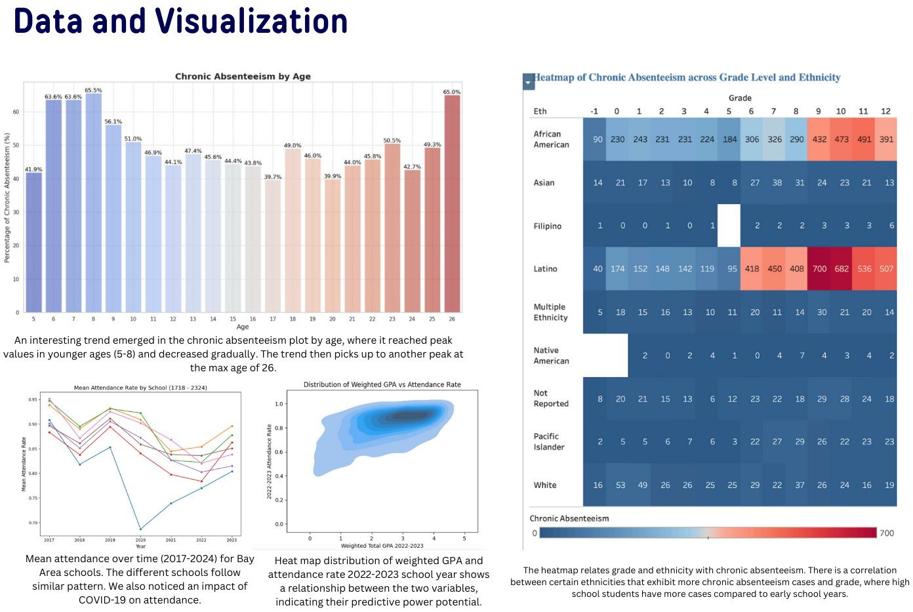
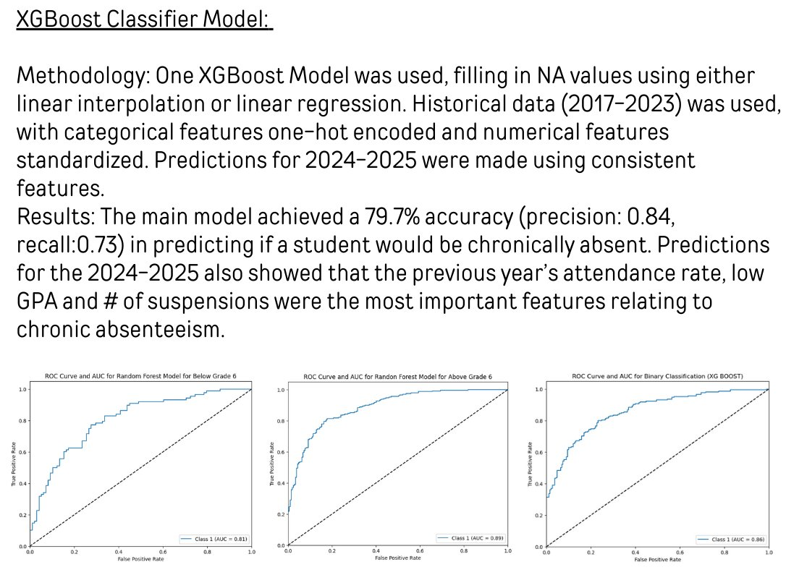
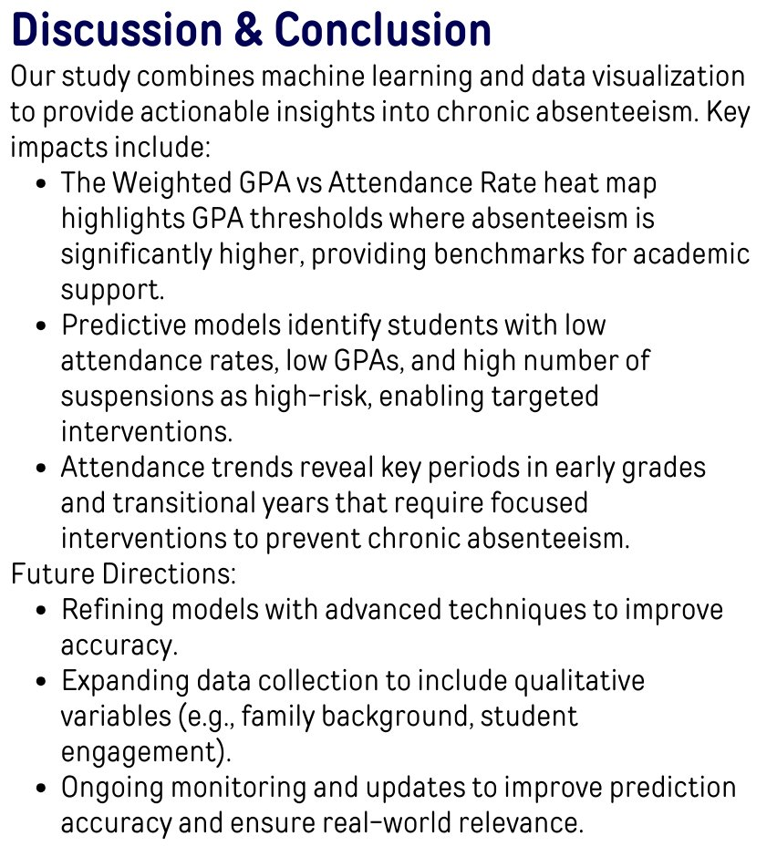
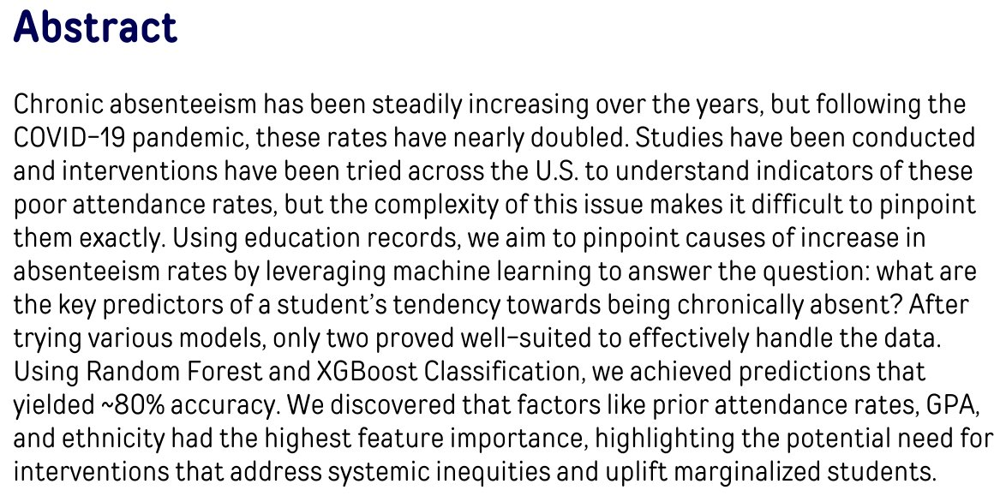
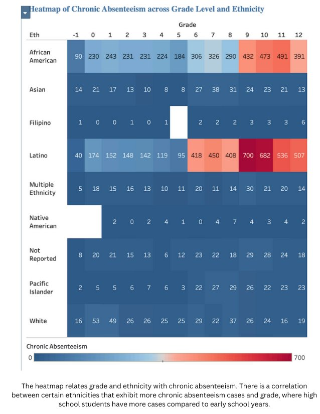

ONGB: Student Absenteeism in Oakland Unified School District
Our team built machine learning models that predict which students in Oakland Unified School District are at risk of chronic absenteeism. We presented the work as a research poster at UC Berkeley's Data Discovery Symposium.




About the project
Chronic absenteeism means missing a large share of the school year. It was rising for years before COVID-19. After the pandemic, the rate nearly doubled. In Oakland Unified School District, marginalized communities are hit hardest.
Our team set out to answer one question: which facts about a student best predict that they will be chronically absent? We trained machine learning models on seven years of student data, from 2017 to 2023, and used them to predict who was at risk in 2024–2025.
I joined the team as a Data Science Discovery intern, working remotely from August 2024 to May 2025.
What we set out to learn
- Which facts about a student best predict chronic absenteeism
- Whether a model can flag at-risk students for the next school year
- How attendance changed before, during and after COVID-19
- Where schools can step in
A few words used on this page:
- Chronic absenteeism
- Missing a large share of the school year, for any reason. In California, that means missing 10% or more of school days.
- Machine learning
- Teaching a computer to find patterns in past data, so it can make predictions about new data.
- Model
- What the computer learns from the data. Give it facts about a student, and it predicts an outcome.
- Random Forest
- A model made of many simple decision trees. Each tree makes a guess, and the most common answer wins.
- XGBoost
- A model that builds decision trees one after another. Each tree fixes the mistakes of the last.
- Predictor
- A fact that helps a model make its guess, like GPA or past attendance. Also called a "feature."
- Accuracy
- Of all the model's predictions, the share that were right.
- Precision
- Of the students the model flagged as at risk, the share who really were chronically absent.
- Recall
- Of the students who really were chronically absent, the share the model caught.
- Jupyter Notebook
- A tool for writing and running code step by step, with notes and charts in between.
What I did
We tested several kinds of models. Two handled the data best: Random Forest and XGBoost. We built three models in all: two Random Forest models and one XGBoost model. The Random Forest models were split by grade, because students below grade 6 don't have GPAs yet.
My part:
- Built the Random Forest and XGBoost models with the team in Jupyter Notebook
- Designed the layout of the final research poster
- Wrote the abstract, turning technical findings into takeaways anyone at the symposium could follow
- Presented the research at UC Berkeley's Data Discovery Symposium

What we found
The short version: a student's attendance last year is the best sign of whether they will be chronically absent this year.
- Our best models predicted chronic absenteeism with about 80% accuracy. When the XGBoost model flagged a student as at risk, it was right 84% of the time
- The three strongest predictors were past attendance, GPA and number of suspensions
- For 2024–2025, two groups stood out as most at risk: students with borderline attendance (90% to 92%), and older students with a GPA below 2.0
- Higher GPAs went with better attendance
- Attendance dropped across Bay Area schools during the pandemic
- Latino and African American students had the highest rates of chronic absenteeism, especially in the upper grades. That gap points to systemic inequities that schools need to address

What this means for schools
Schools already collect the data that predicts chronic absenteeism. Our findings show where to use it:
- Use the models to flag students with low attendance, low GPAs and many suspensions, and reach out before they fall behind
- Use the GPA levels where absenteeism rises sharply as benchmarks for academic support
- Focus extra support on the early grades and on transition years, like the move to middle or high school
- Support the whole student: schoolwork, and social and emotional needs too
The result
We presented the poster at UC Berkeley's Data Discovery Symposium. Our message was simple: schools already have the data to spot at-risk students early. Past attendance, GPA and suspensions are the place to start.
What comes next
The models can get better. The next steps are to refine them with more advanced techniques, add information the records don't capture yet, like family background and student engagement, and keep checking the predictions as new data comes in.
The full poster
Every chart and detail is on the poster. Zoom in to read it.